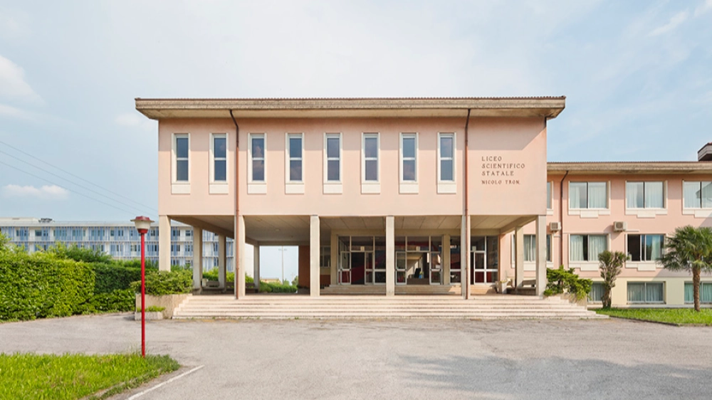

Ho 17 anni e sono nato il 22 Gennaio 2009 a Thiene, una città in provincia di Vicenza. Sono una persona solare sempre pronta a nuove esperienze.
Il mio percorso di studi è iniziato alla scuola elementare delle Canossiane in centro Schio per poi iniziare le medie alle Maraschin. Alle Maraschin ho capito subito che ero portato per le materie scientifiche, quindi la scelta delle superiori è stata molto facile: il liceo scientifico Tron. In particolare l'indirizzo scienze applicate per poter continuare disegno tecnico, avere un approccio a CAD, scoprire l'informatica e avere la formazione migliore per scienze e matematica.
